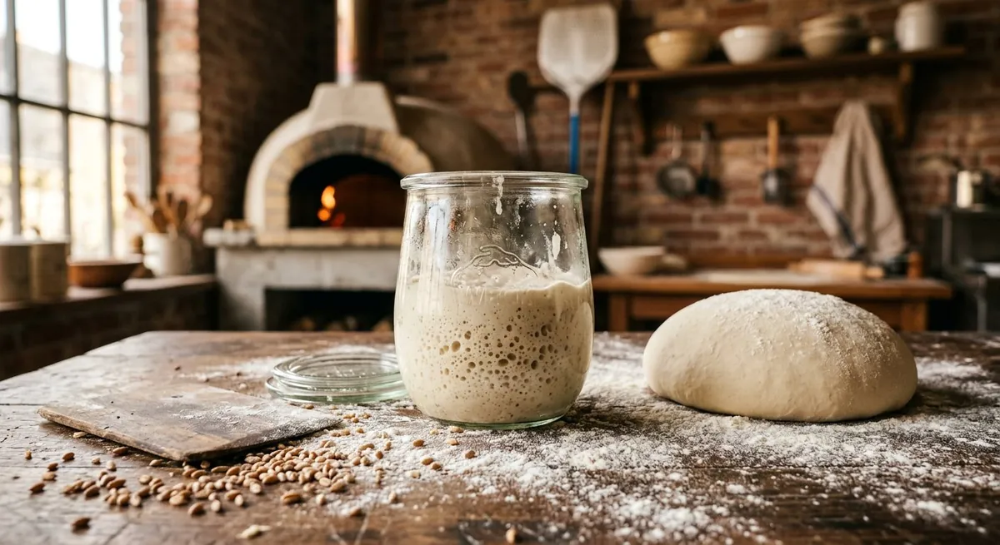
01 · FERMENTOmasa madre viva
Masa madre
Fermento natural y harina seleccionada. El bloque instala calidad artesanal desde el primer scroll sin tecnicismos aburridos.
Diseñamos y programamos la web interactiva de Antón · Cocina de Barrio: una experiencia sensorial con pizza giratoria 3D, armado paso a paso y pedidos directos por WhatsApp que venden pizzas, empanadas de 150 gr, congelados para casa y prepizzas mayoristas sin ceder comisiones.
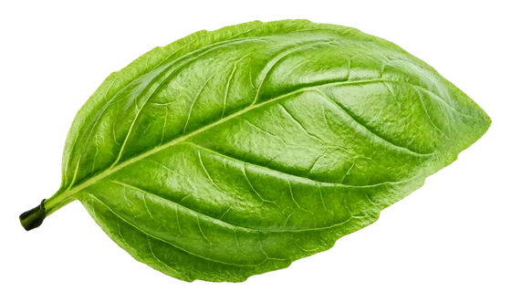
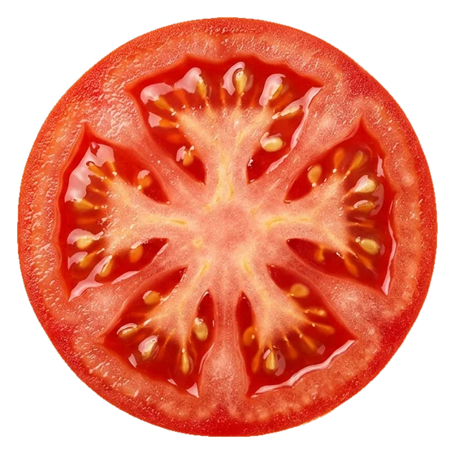
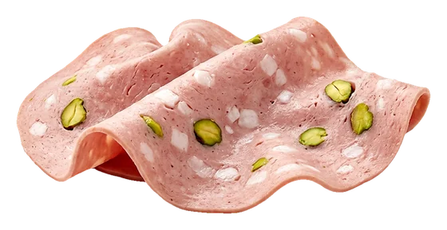
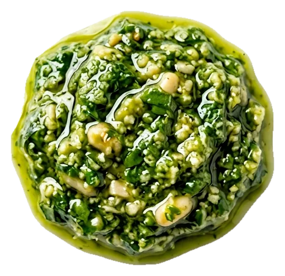

Antes de mostrar un solo precio, la web explica por qué Antón no compite con una pizza industrial: fotografía real de oficio, fermentación lenta y borde crocante que abren el apetito en tres segundos.

01 · FERMENTOFermento natural y harina seleccionada. El bloque instala calidad artesanal desde el primer scroll sin tecnicismos aburridos.
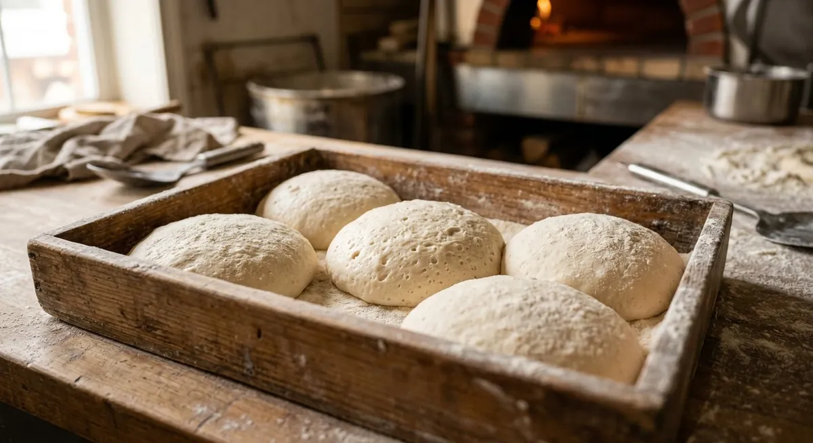
02 · PACIENCIAFermentación prolongada sin apuro: una masa liviana, aireada y fácil de digerir que convierte a un cliente casual en vecino habitual.
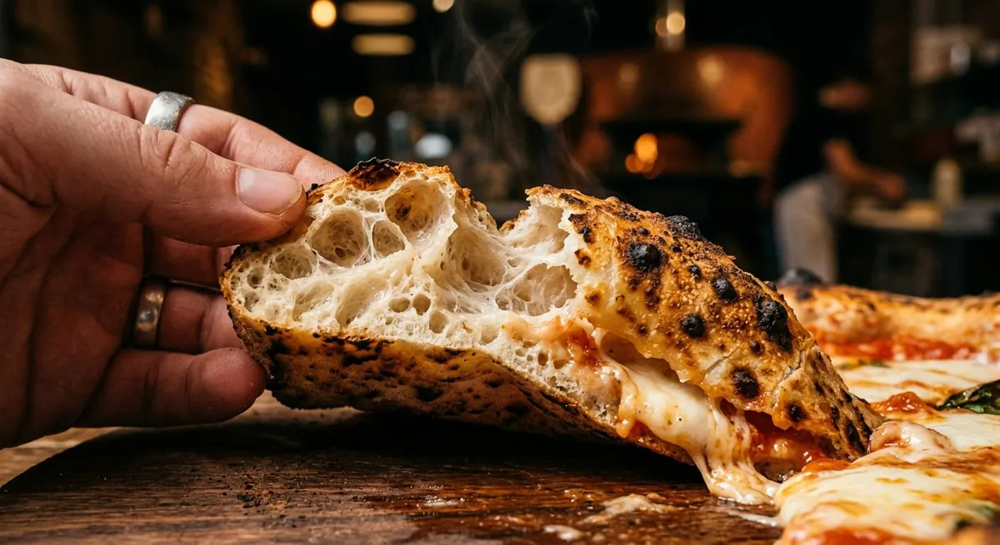
03 · COCCIÓNTextura real en primer plano: crocante por fuera, suave por dentro. El detalle visual que empuja al botón de pedido.
En la web real, el cliente arma la pizza estrella paso a paso mientras hace scroll. Tocá cualquier paso del 01 al 08 —o reproducí la secuencia— para ver cómo POPUPS transformó una receta en interacción memorable.
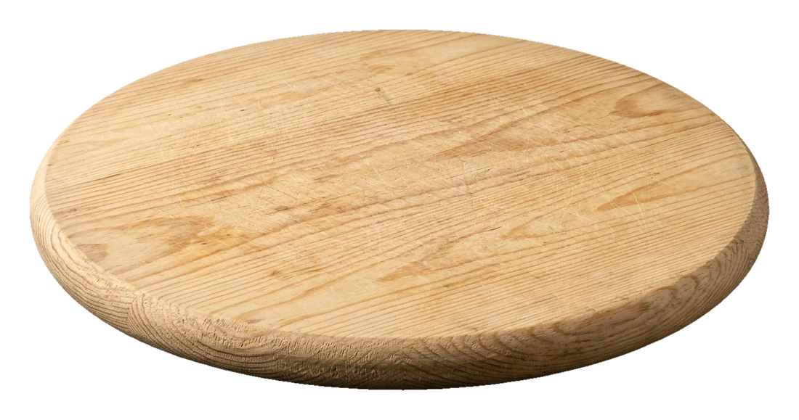
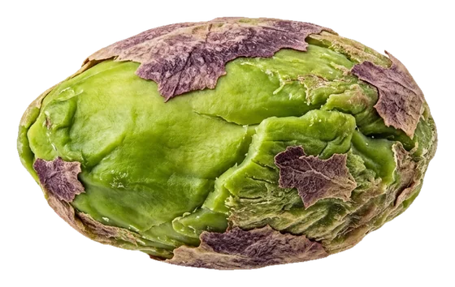
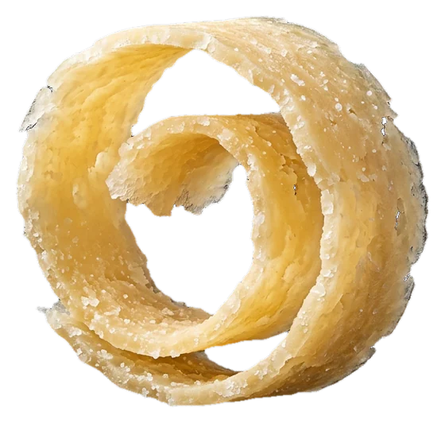
Cada sección de Antón ataca un momento distinto de consumo —desde la cena del viernes hasta bares que compran prepizzas por mayor— cerrando siempre en WhatsApp.
Mostramos cada variedad con silueta real recortada, ingredientes bien claros y el gancho imbatible del mediodía para llenar el mostrador entre semana.
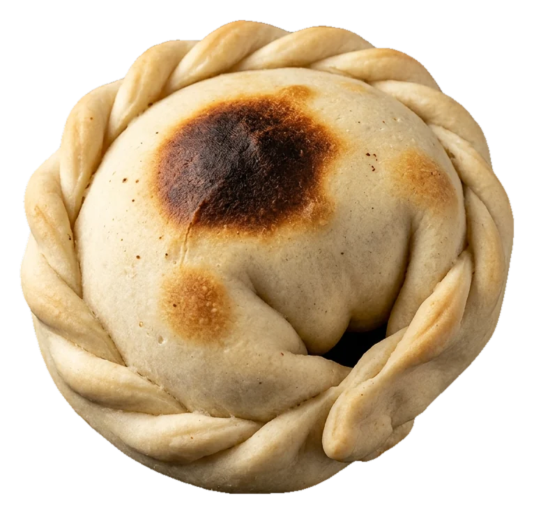
Berenjenas al curry Queso azul + fundido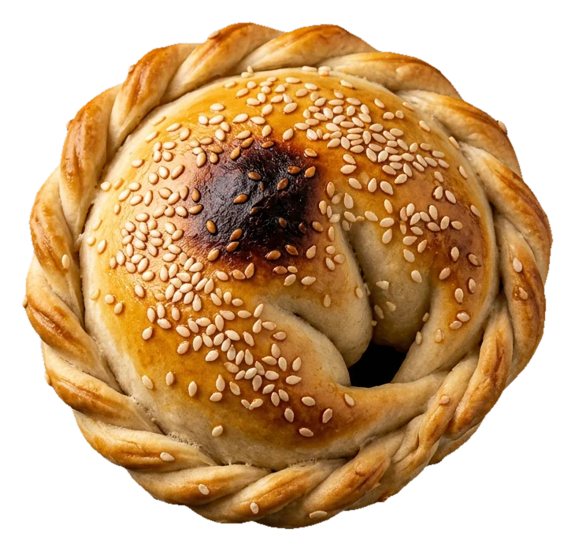
Cheeseburger Big Sésamo + 150 gr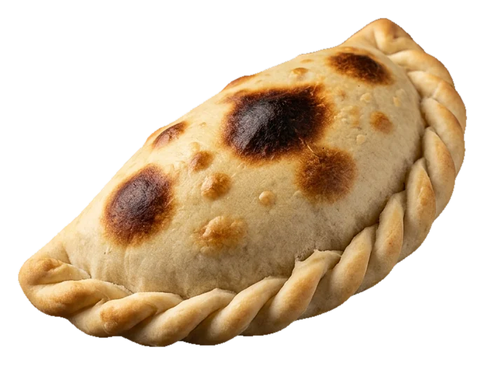
Vacío braseado Repulgue artesanal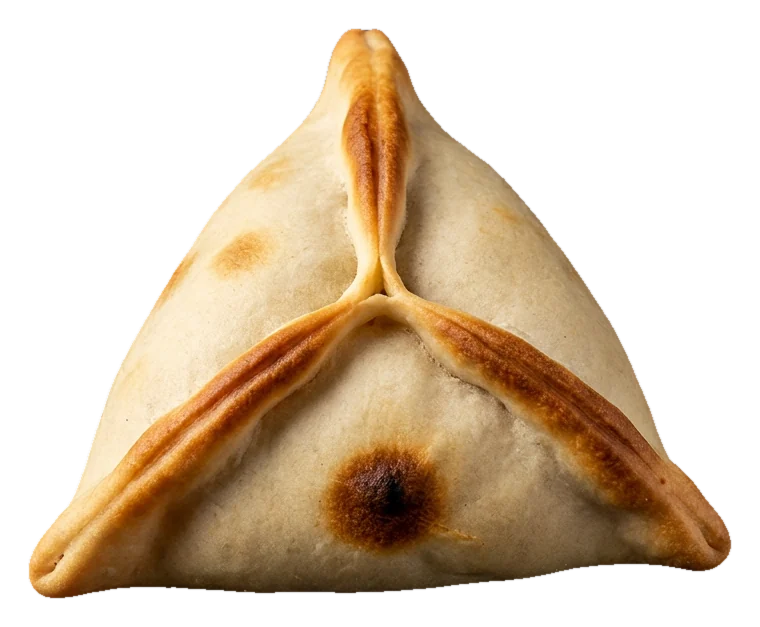
Árabe tradicional Horneada al momentoAbrimos una segunda línea de facturación que no depende del horario pico del horno: el vecino compra prepizzas, empanadas crudas, tartas y pizzas congeladas para resolver la semana.
La misma web convierte a Antón en proveedor B2B: cualquier bar o cafetería de Córdoba que quiera sumar pizza de masa madre a su carta encuentra una propuesta dedicada con consulta directa.
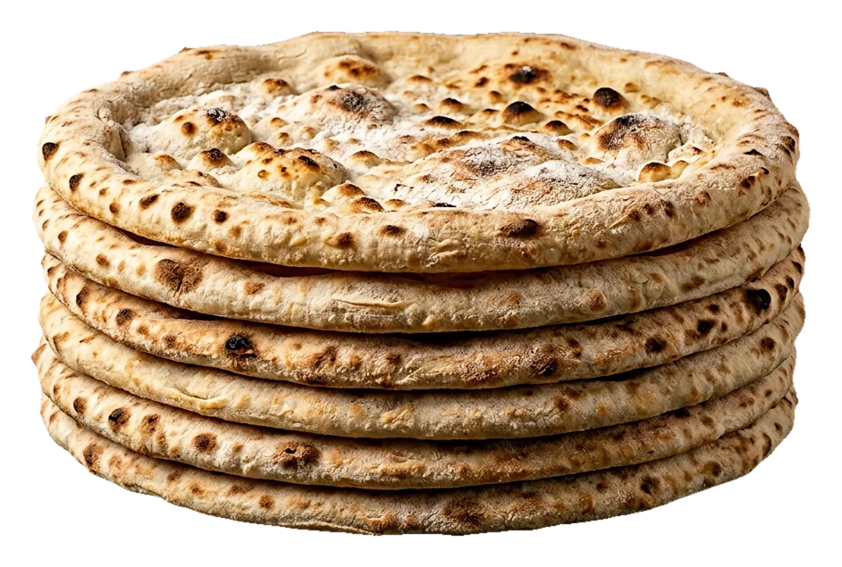
En vez de obligar a crear cuenta, cargar tarjeta o pagar 25–30% a una app de delivery, cada producto pre-completa el mensaje de WhatsApp listo para tocar enviar. Probá cómo funciona acá:
Todo lo que diseñamos y construimos para Antón Cocina de Barrio en Urquiza 1869, Alta Córdoba.
Antón hacía un producto de primer nivel —masa madre de fermentación lenta, empanadas de 150 gr y combos de barrio— pero en redes sociales un menú estático en PDF o historias sueltas no transmite textura, oficio ni ordena sus cuatro líneas de negocio.
Construimos una web gastronómica a medida con la calidez del barrio y acabados de producto insignia: pizza 3D giratoria, historia visual de la masa madre, secuencia interactiva de 8 pasos y deep links directos a WhatsApp para cada producto y canal.
Si tenés pizzería, café, hamburguesería, heladería, panadería o bar, en POPUPS diseñamos tu web interactiva con pedidos directos a WhatsApp —y si querés, la conectamos con Mis Sellos para que tus clientes vuelvan todas las semanas.